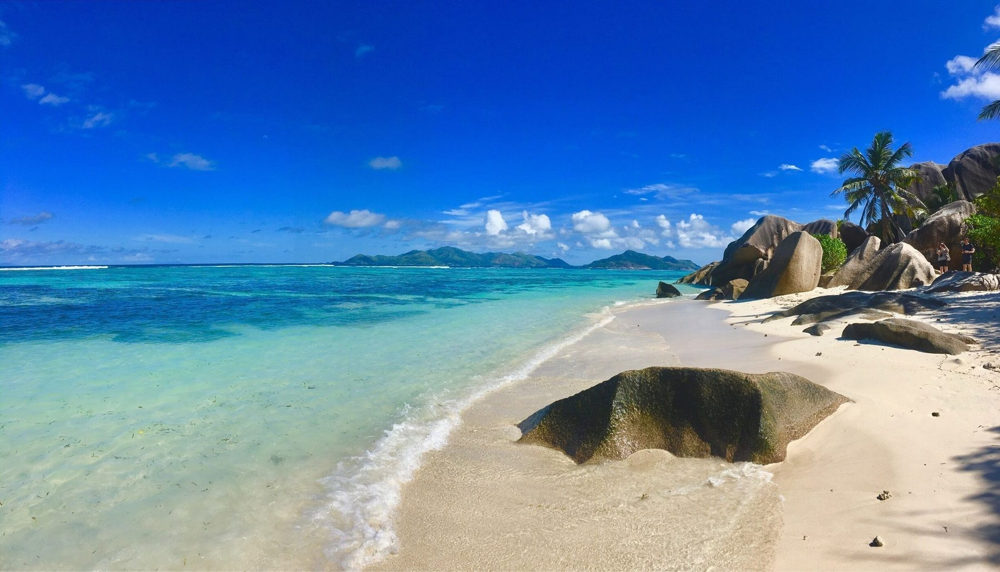

Destination Guide
Seychelles
Granite boulders, jungle-backed beaches, and a rainforest older than the dinosaurs. Here's how to see it without overpaying for any of it.
Home / Destinations / Seychelles
Best time to go
Apr–May, Oct–Nov
Fly into
Mahé (SEZ)
Currency
Seychellois Rupee (SCR)
Suggested stay
7–9 days
Plan This Trip
Search flights and hotels for Seychelles right here — no extra tabs.
Prefer another search engine? Kiwi.com →
Why go
The 115 islands split into two groups: the granite inner islands (Mahé, Praslin, La Digue), where almost everyone stays, and the low-lying coral outer islands, mostly private-resort or research territory. Mahé has the only international airport, so most trips start there before a ferry or short flight to Praslin or La Digue. Expect powder-white beaches backed by giant granite boulders, a rainforest that predates the dinosaurs, and prices that skew luxury — there's little budget infrastructure once you leave Mahé.


Where to Stay — Seychelles
Book Mahé or Praslin for more choice and lower prices than La Digue or the private-island resorts.

Four Seasons Resort Seychelles
Hillside villas above Petite Anse with private plunge pools and some of the best sunset views on Mahé.

Labriz Silhouette Island
Reachable only by boat, set inside a national park that covers most of the island — genuine remoteness.

Canopy by Hilton Seychelles
A newer, more affordable base near Beau Vallon with beach access and a proper pool deck.

Beau Vallon, Mahé
Mahé's liveliest beach strip, with the widest spread of guesthouses and mid-range hotels on the island.
Beaches & Rainforest
The islands are small — plan for beaches by day and an early night. Rental cars and boat transfers, not tour buses, are how most people get around.
Anse Lazio & Anse Source d'Argent
Anse Lazio on Praslin is regularly ranked among the world's best beaches — powder-white sand, granite boulders at either end. Anse Source d'Argent on La Digue is the postcard shot: pink granite framing shallow, calm water. Get there for opening (9:30am, via L'Union Estate) before the day-trip boats from Praslin arrive.
Vallée de Mai — a UNESCO rainforest and the only place the coco de mer palm grows wild. Go early to hear the endemic black parrot before the tour groups arrive.
Curieuse Island — a short boat ride from Praslin, home to free-roaming Aldabra giant tortoises you can walk right up to.
Where to Eat
Fresh fish is the constant — ask what came in that morning rather than ordering off the menu by default.


Perry's Grill & Fuego Bistro
Perry's Grill does whole grilled fish — usually red snapper, served with breadfruit and a simple tomato sauce, casual and consistently good. Fuego Bistro at Angel Fish Bayside is the relaxed, comfort-food-leaning option on a night you don't want to dress up for seafood.
Getting There


Seychelles International Airport (SEZ)
On Mahé, a short drive from Victoria — the only international gateway to the islands, served directly from Europe, the Gulf and parts of Africa and Asia. Air Seychelles, the national carrier, runs frequent inter-island hops to Praslin. Ferries connect Mahé, Praslin and La Digue daily, and are the standard way to reach La Digue, which has no airstrip of its own.
A Simple 7-Day Route
Days 1–2
Mahé
Land at SEZ, settle in near Beau Vallon, visit the National Botanical Garden.
Days 3–5
Praslin
Ferry or short flight over. Vallée de Mai, Anse Lazio, and a boat trip to Curieuse Island.
Days 6–7
La Digue
Ferry from Praslin, hire a bicycle, and get to Anse Source d'Argent at opening.
Day 8
Back to Mahé
Ferry back to Mahé with time to spare before the flight home.
Good to Know
Getting around
Rental cars work well on Mahé and Praslin. La Digue is small enough to explore by bicycle, which most visitors do instead.
Entry requirements
Most nationalities get a free tourist visa on arrival; check the official Seychelles immigration site rather than third-party lookalikes.
Packing
Reef-safe sunscreen, water shoes for the granite boulders, and a light rain jacket outside the dry season.
Start Planning Your Seychelles Trip
Compare flights to Mahé, and browse hotels from Beau Vallon to Praslin, in one place.